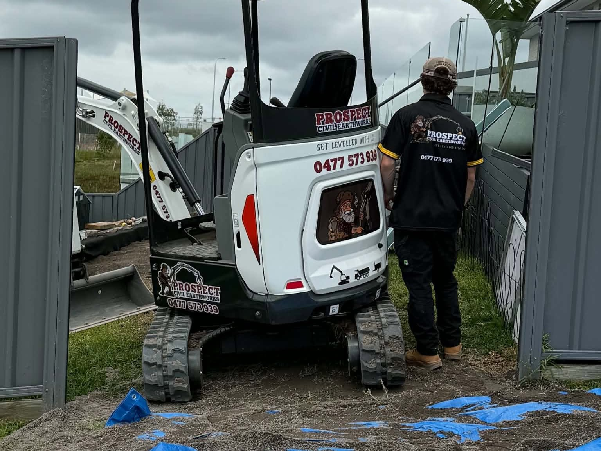
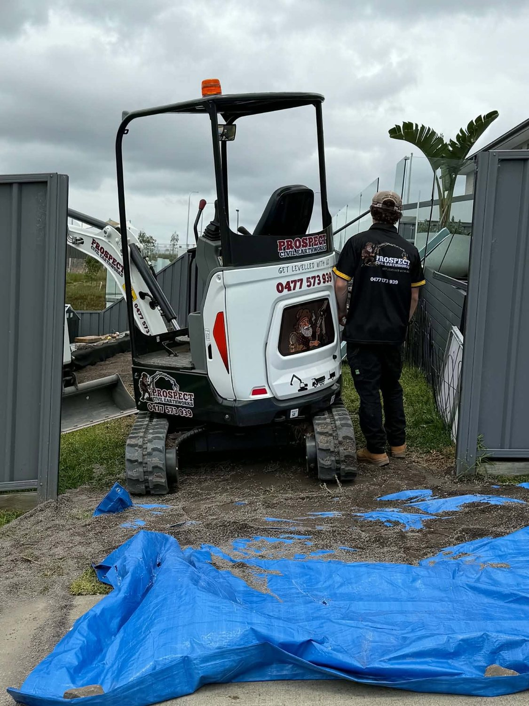
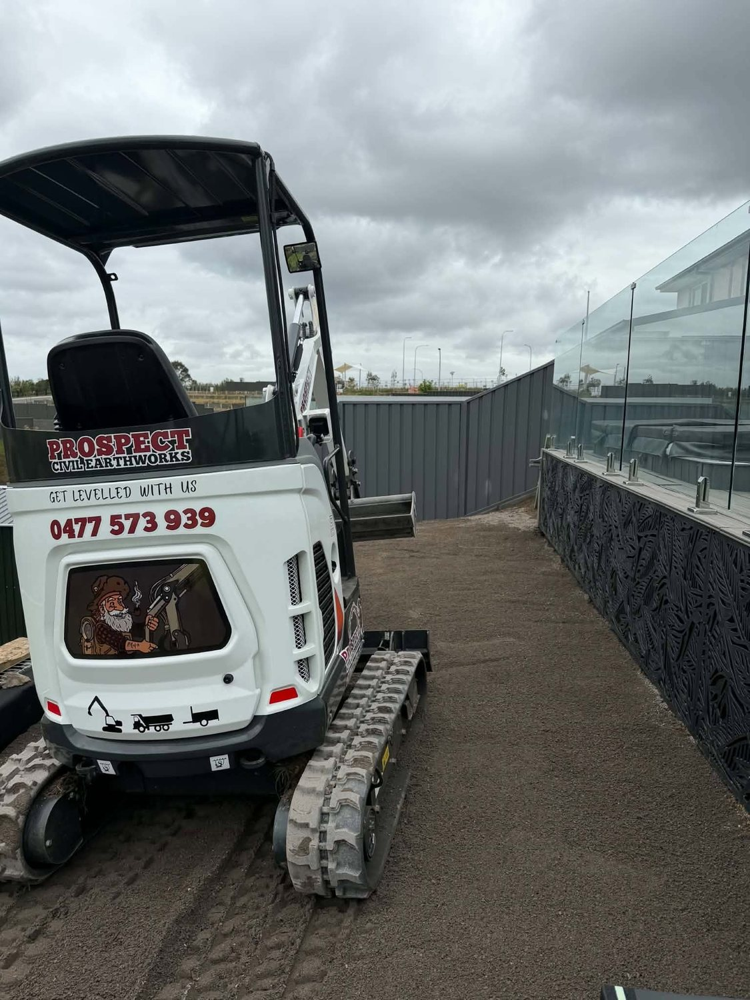
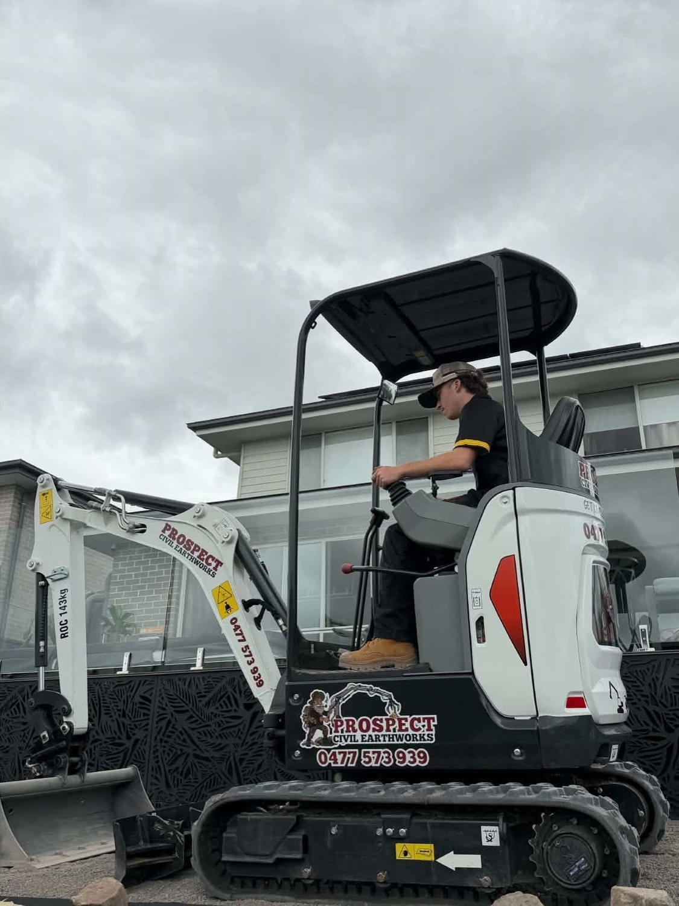
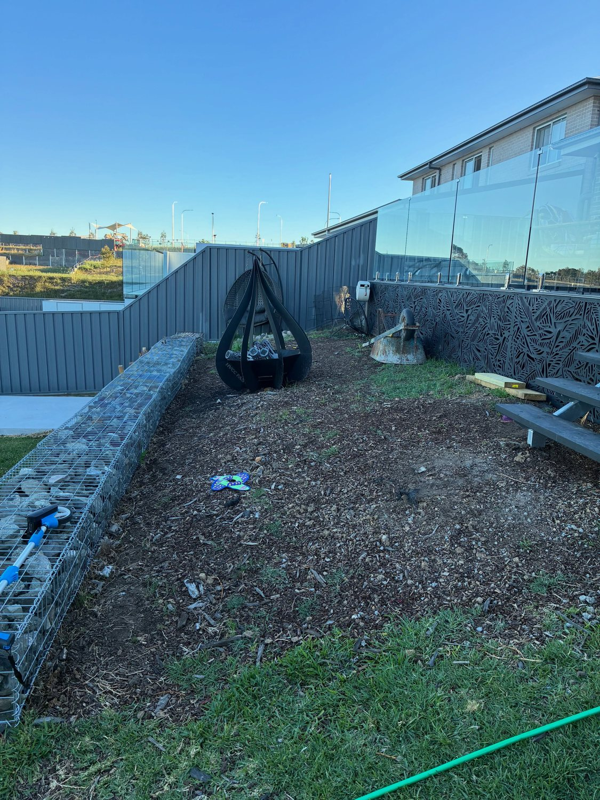
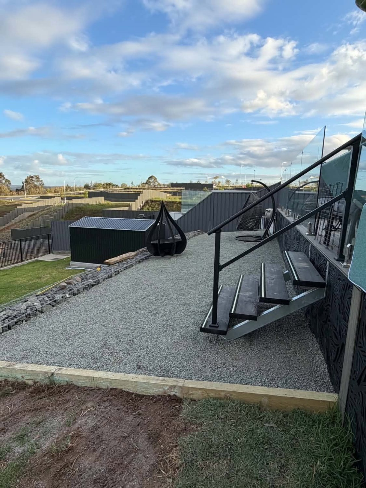
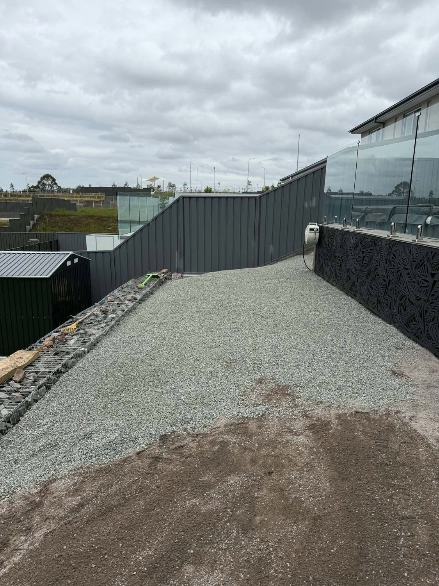

01
Excavation
Digging for footings, pools, retaining and drainage, with the spoil carted out or stockpiled.
Civil earthworks · Gillieston Heights, NSW
Civil earthworks, excavation, site preparation and rubbish removal — from tight side access to a full backyard reset.

Services
The work we take on for builders, landscapers and homeowners.
01
Digging for footings, pools, retaining and drainage, with the spoil carted out or stockpiled.
02
Clearing, stripping and levelling a block so the next trade starts on a flat, ready surface.
03
Cuts, fills and batter work for driveways, pads and access, built to the levels that were set.
04
Green waste, demolition rubble and general site rubbish cleared and taken away.
05
Small structures, slabs and hardstand broken out and removed before the new work starts.
06
Uneven yards cut and levelled to suit retaining walls, paving and new landscaping.
Process
Straightforward steps, and a site left tidy when we're done.
01
Call or fill in the quote form with the address, access and what needs doing.
02
We work out the machine, the access and the levels, then price the job.
03
Excavate, cut and level, carting spoil and rubbish as we go.
04
Site tidied, levels checked, and ready for the next trade or the landscaping.
Work
Photos from a recent job — the dig, the levelling and the finished hardstand.






FAQ
Civil earthworks, excavation, site preparation and rubbish removal — plus demolition and backyard resets.
Yes — the work shown here includes digging in a narrow corridor between retaining walls using a compact machine.
Yes. Rubbish removal is part of what we offer, and excavated spoil is either carted out or stockpiled where you want it.
They're a regular job — cutting and levelling an uneven yard to suit retaining, paving and landscaping.
Call 0477 573 939, email info@prospectcivilearthworks.com.au, or fill in the online quote form.
Across NSW — recent work shown here is in Gillieston Heights. Call to confirm access for your address.
Get a quote
Excavation, site prep, earthworks and rubbish removal across NSW. Send the details and we'll price it.
Request a quote online